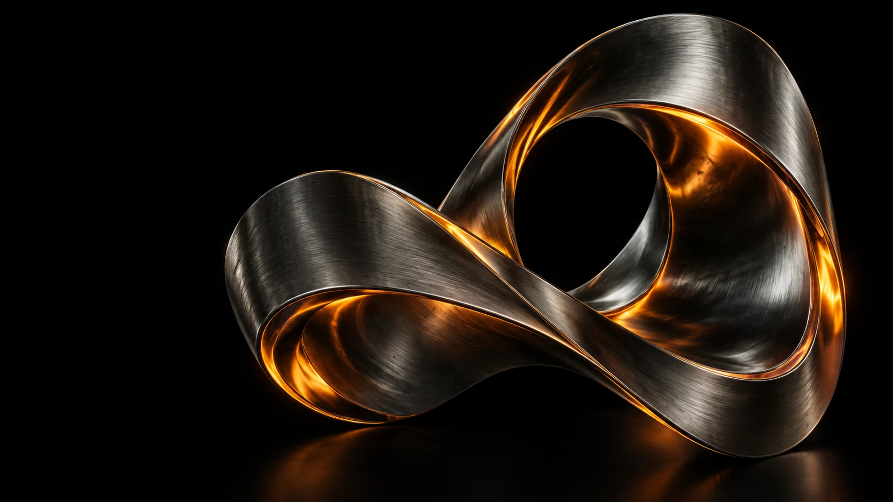

01
DIRECTION
先找到方向，
再让创意发生。
将模糊的想法转化为明确的视觉命题，建立风格、情绪与叙事的一致性。
解决「想表达，但不知如何表达」
01 / ABOUT ME
设计判断，始终在前。我关注技术带来的新表达，也相信视觉背后的判断更有价值。从概念探索、视觉叙事到细节打磨，让 AI 成为创作的延伸，让每一个画面都回应清晰的设计意图。
以视觉设计为核心，探索生成式 AI 在创意表达中的应用。
任职经历、合作品牌与代表项目将在提供资料后更新。
02 / SELECTED WORK
每一个画面，都有一个出发点。材质、光线、空间与叙事。
探索不同维度的视觉表达。
以下为 AI 生成的概念示例，用于呈现视觉方向，后续将替换为个人真实作品。
03 / MY APPROACH
工具不断进化，好的判断始终重要。从发现问题，到建立视觉语言。
让创意有方向，让结果可落地。
DIRECTION
将模糊的想法转化为明确的视觉命题，建立风格、情绪与叙事的一致性。
解决「想表达，但不知如何表达」CRAFT
关注构图、材质、色彩和光影，将 AI 的生成能力与设计师的细节控制结合。
解决「有了画面，却少一点质感」SYSTEM
考虑不同渠道与使用场景，延展统一的视觉系统，让创意在实际应用中成立。
解决「单张出彩，整体却不统一」PROCESS
用清晰的阶段目标推进创作，通过反馈校准方向，在效率与完成度之间找到平衡。
解决「反复试错，方向迟迟不清」